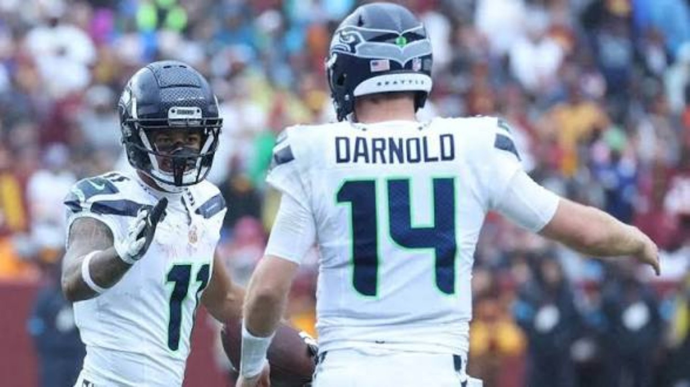
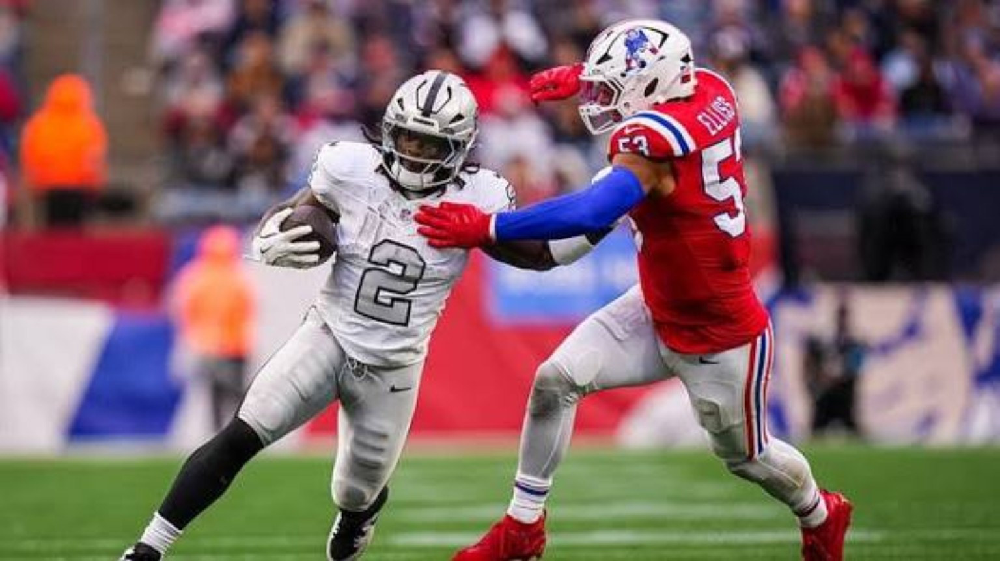
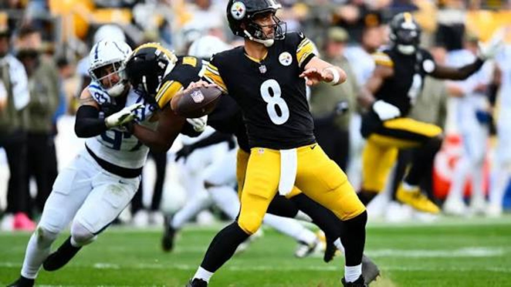

THE LEAGUE
IS ON THE
CLOCK.
Five weeks showed us who can win. Week 6 asks who can keep it together when the pressure changes.
 5–0. BUT NOT
5–0. BUT NOTFULL STRENGTH.
Everybody loves a clean record when the season is young. The harder part is protecting an identity once injuries arrive, losses stack up and every opponent comes prepared for your best punch. At 4 Da Kulture, we're not interested in treating Week 6 like a list of television appointments. We're looking for the moment that separates early-season momentum from teams that can actually sustain it.
The undefeated 49ers have a suspension to navigate. Seattle has to respond on a short week. The Raiders are looking for proof they belong in the contender conversation. Kansas City remains the conference measuring stick. And Philadelphia is navigating a quarterback health situation that reaches beyond football. Here is the full 4DK breakdown.
SAN FRANCISCO IS 5–0. NOW THE COST OF WINNING GETS REAL.
There is a different kind of pressure that comes with being 5–0. At first, you are the surprise. Then you become the standard. Every opponent gets a chance to put its best shot on the team everybody else is chasing, and the 49ers are officially at that stage of the season.
San Francisco survived Seattle 32–29, with Mike Evans giving Brock Purdy a physical presence in the moments that demanded somebody make a contested catch. That growing chemistry gives the passing game something it has needed: a receiver who can take a tough matchup and still win at the catch point. Add Christian McCaffrey and the different ways he stresses a defense, and the offense has enough answers to keep the unbeaten run moving.
But our biggest question has been health, and now it is discipline too. Dre Greenlaw received a one-game suspension following the sideline incident with Seattle’s Ernest Jones IV. His appeal was denied, meaning the 49ers must face Washington without him Monday night. Greenlaw brings range, violence at the point of attack and the kind of emotional edge that does not show up neatly in a stat sheet. The replacement plan matters: communicating coverages, holding run fits and finishing tackles will all be under a brighter light.
There is an uncomfortable distinction between playing with an edge and letting the edge cost the team. San Francisco has enough veteran leadership to understand that. An undefeated record should not create the illusion that the roster can absorb every loss without consequences. The goal cannot simply be 6–0; it has to be keeping the championship version of this team together for December and January.
Can Purdy and Evans keep creating answers in high-leverage moments while the defense maintains its physical identity without Greenlaw? And does San Francisco leave Monday healthier than it arrived?
SEATTLE NEEDS A RESPONSE. DENVER WANTS TO MAKE IT A STATEMENT.
At 3–2, Seattle is living in the part of the standings where a single game can change the tone of a month. The Seahawks pushed the undefeated 49ers all the way to the finish, but close losses do not carry the same value as wins when the NFC West is this competitive. Thursday is less about earning style points and more about showing the previous week did not leave a scar.
Sam Darnold has to control the emotional pace of this game. Denver will want to make the pocket uncomfortable, force longer third downs and turn one hurried decision into a short field. Seattle needs rhythm throws, patient protection and the discipline to take ordinary gains instead of chasing the kind of play that gets a quarterback in trouble.
The Broncos are 3–2 themselves after beating the Chargers 23–17. Their edge is a defense capable of turning a football game into a field-position contest. But injury concerns in the secondary are a real storyline to monitor before kickoff. Seattle does not need to invent a new identity to capitalize; it needs to be efficient enough to expose openings without giving away possessions.
Thursday games compress the preparation week, which is why details become a bigger part of the story than usual. Tackling, protection calls, communication after motion, and red-zone execution are going to tell us more than one highlight throw. One of these teams leaves this matchup with a much stronger argument that it belongs in the playoff conversation.
Can Darnold avoid the self-inflicted mistakes, and does Seattle’s offense handle Denver’s pressure without losing the ball or its patience?

BUFFALO IS A CONTENDER. THE RAIDERS HAVE TO PROVE THEY CAN LOOK LIKE ONE.
The Raiders began 3–0 and had everybody asking whether Las Vegas was arriving ahead of schedule. Two losses later, including a 45–17 defeat to New England, the conversation is a lot less comfortable. That does not erase the first three weeks. It does mean this team has reached the point where a strong opening month is no longer enough to make its case.
Josh Allen brings that test to Allegiant Stadium. Buffalo just escaped a 37–34 overtime thriller against the Rams, a game that underlined how dangerous Allen becomes when normal offense stops working and the quarterback starts creating his own solutions. A defense can execute the first part of the play correctly and still lose to him on the second part. That is the difference between facing another offense and facing a true centerpiece.
For Las Vegas, the response has to start with discipline. Finish the tackle. Keep rush lanes coordinated. Do not let the quarterback turn a manageable third down into a scramble that flips the field. Offensively, the Raiders have to establish a run-game presence and keep Allen standing on the sideline. No team can guarantee it will completely stop him, but it can limit his chances to take over.
We are not going to call the Raiders pretenders because of two losses, and we are not going to call them contenders because of three early wins. Buffalo is the better measuring stick. Four competitive quarters would show progress. A win would announce that Vegas belongs in a more serious conversation. A flat performance would force us to question how much of September was sustainable.
Can Vegas control the ball, keep Allen contained when the play breaks down, and show the toughness it flashed during its 3–0 start?

KANSAS CITY IS 4–0. LOS ANGELES IS RUNNING OUT OF EXCUSES.
There is a certain freedom in being the team everybody is chasing and a different kind of burden that comes with staying there. Kansas City is 4–0 after its bye, and Patrick Mahomes remains the quarterback every serious AFC opponent has to account for. The Chiefs do not need another October headline to prove they can win. They need to show their operation is still built to hold up when the stakes grow.
Across from them is a Chargers team with an 0–5 record, a quarterback in Justin Herbert who is capable of much more than that number suggests, and a season that cannot afford another week of explanations. We have seen too much talent on disappointing teams to confuse ability with results. Los Angeles needs cleaner pass protection, more reliable early downs and fewer stretches where the entire offense becomes one desperate Herbert throw.
For Kansas City, the week is an opportunity to reestablish its rhythm after the break. For the Chargers, it is a chance to show the record does not reflect a team already mentally checked out. Division games have their own familiarity, but familiarity is not the same thing as being able to finish. Against Mahomes, the Chargers cannot let a winnable game come down to the final two minutes and expect mercy.
We still put Kansas City near the top of the conference because the coaching, quarterback play and situational composure deserve it. The challenge for everyone else is to build a team that can beat the Chiefs for sixty minutes, not merely look impressive on the first drive.
Can the Chargers protect Herbert long enough to threaten Kansas City, or will Mahomes remind the division why his team still controls the standard?

JALEN HURTS IS OUT. THE EAGLES MUST FIND THEIR IDENTITY WITHOUT HIM.
The biggest injury headline of this week is not a rumor. Philadelphia has ruled Jalen Hurts out against Carolina after a follow-up ultrasound detected movement in a small superficial blood clot in his leg. The injury sequence began when Hurts was cleated in the calf against the Rams on October 4. He was evaluated, cleared to play against Jacksonville and then sidelined following additional imaging. The team is determining the appropriate treatment. There is no responsible reason for us to invent a return date.
First, this is a health matter. That comes before playoff math or quarterback debates. But there is an obvious football consequence: the 2–3 Eagles now have to reorganize their offense in the middle of a three-game losing streak. Tanner McKee is expected to take over under center, and that changes the way defenses prepare for Philadelphia.
Hurts is not interchangeable with another passer. His movement affects run fits, the space available to the backs, the way defenders react in short yardage and how Philadelphia survives broken plays. McKee can still distribute the ball, but the Eagles need to support him with protection, a functioning run game and a plan that does not require a backup quarterback to impersonate a uniquely physical starter.
This is where teams discover whether they have a real system or a plan that depends on one man making extraordinary things look ordinary. The Eagles do not have to solve every problem Sunday, but they do have to compete with purpose while their quarterback takes care of himself.
Can Philadelphia give McKee manageable situations, get enough healthy help around him and avoid letting an already difficult start spiral into a larger crisis?

THE INJURY &
SUSPENSION PULSE.
Jackson has been recovering from an ankle injury and had not returned to practice as of Baltimore's October 14 update. The team remained hopeful about Sunday against Cleveland, but no final return was confirmed. Tyler Huntley is the alternative under center after helping Baltimore beat Atlanta. We are not treating a possible return as a guarantee.
Greenlaw's one-game suspension following the incident against Seattle was upheld on appeal. He will miss Monday's matchup with Washington. The challenge is not merely replacing his tackles; it is replacing his range, communication and emotional edge without losing discipline.
Philadelphia ruled Hurts out against Carolina after follow-up imaging showed movement in a small superficial blood clot in his leg. The Eagles are evaluating treatment, and no firm timeline beyond Sunday was announced. Tanner McKee is expected to handle the start.
Practice participation and game designations change throughout the week. This is our October 15 editorial snapshot, not a claim that every injured player has received a final game designation. We will revisit meaningful changes before kickoff.

Pittsburgh and Tampa Bay have their own pressure points. For the Steelers, protection and third-down execution will dictate how much of the offense can function; Tampa Bay needs to keep finding ways to finish drives. We will track this matchup alongside Dallas–Green Bay and the rest of the Week 6 board.
READ ALL 14 WEEK 6 MATCHUPS →THE 4DK BOTTOM LINE.
Five weeks are enough to give the league a shape, but not enough to make any story permanent. The 49ers still have to stay together. The Seahawks have to bounce back. The Raiders need evidence. The Chiefs want to keep their grip. The Eagles have to protect their quarterback's health and discover what else their system can give them.
Those are the stakes. OUR PERSPECTIVE. OUR CULTURE. OUR PLATFORM.
← BACK TO 4DK NFL